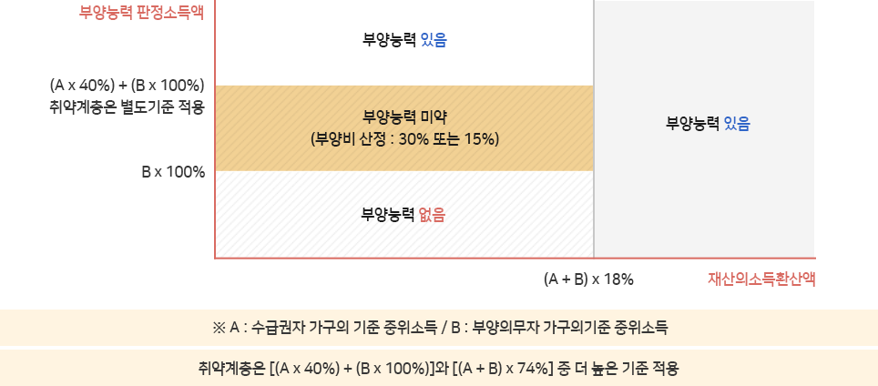

품격있는 의성맞춤복지 의성사회복지

대상자별

참고 : 부양의무자 부양능력 판정 도해

부양의무자의 소득이 부양의무자 가구 최저생계비의 130% 미만이고(소득기준) 재산의 소득환산액이 수급권자 및 부양의무자 가구 각각 최저생계비 합의 42% 미만일 경우에(재산기준) 부양능력 없음으로 판정되고, 부양의무자 소득이 부양의무자 가구 최저생계비의 130% 이상이면서, 수급권자 및 부양의무자가구 각각의 최저생계비 합의 130% 미만이고(소득기준) 재산의 소득환산액이 수급권자 및 부양의무자 가구 각각 최저생계비 합의 42% 미만일 때 부양능력 미약으로 판정되는 것이 부양능력 판정의 기본 원칙이다. ‘부양능력 있음’이라고 판정되는 경우 피부양의무자는 수급권자의 자격을 얻지 못하고, ‘부양능력 미약’으로 판정되는 경우 간주부양비로서 부양비로 산정된 액수만큼 급여를 받지 못하는 결과가 되기 때문에 부양능력 판정은 부양의무자기준의 효과 면에서 중요하다.
-
초기상담 및 서비스 신청
시/군/구 민간위탁기관을 방문해
초기 상담을 받고 서비스신청 -
대상자 통합조사 및 확정
시/군/구에서 통합하여조사하고
대상자를 확정 -
서비스 실시
시/군/구 민간위탁기관에서
서비스를 실시
보장절차
-
01 급여신청
- 거주지 읍·면·동 주민센터에 수급권자 본인, 친족 및 기타 관계인이 신청하거나사회복지담당곰우원이 직권신청
- (민간복지사 등도 저소득가구 보장의뢰 가능)
- 신청서식 : 사회보장급여 제공(변경)신청서,금융정보 등 제공동의서
- 구비서류(필요시) : 제적등본, 임대차계약서, 소득·재산 확인서류, 외국인등록사실증명서 등
-
02 조사
- 보장기구 및 부양의무자 범위 확정
- 소득 재산 신고 자료 및 사회보장정보시스템(행복E음)을 통해공적자료확인, 금융재산 조회 실시
- 기타 수급권자의 생활 실태 조사, 공적자료에 의하지 않은 대상자는 지출실태조사표에 따른 소득확인 추가조사
- 근로능력판정절차에 따라 가구특성, 장애유무, 진단서등을 통해 대상자의 근로능력 판정
-
03 급여결정
- 조사결과에의거하여 급여실시 여부와 급여내용 결정
- 결정내용 통지(서면, 전자우편, SMS)
- 결정내용에 이의가 있는 경우 통지를받은 날부터 90일 이내 이의신청 가능
-
04 급여실시
- 수급자로 선정된 가구 또는 개인에대하여결정된 급여를 제공
- 급여의종류 : 생계급여, 의료급여, 주거급여, 교육급여, 해산급여, 장제급여, 자활급여
-
05 확인조사
- 공적자료 변동사항은 사회보장정보시스템(행복E음)을 통해 주기적으로 조사실시
- 공적자료에의하지 않은 대상자는 연간조사계획에 따라 확인조사 실시
- 확인조사 결과에 따라 변동사항이있는 경우급여변경, 급여중지 등결정
-
06 보장중지
- 확인조사 결과 부양의무자 및 소득 재산상의 변동으로 인해 선정기준을 초과하는 경우 급여중지
- 일부 부정수급자 등에대하여는 보장비용장수 기준에 의거하여 보장비용 징수